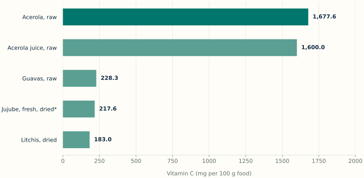
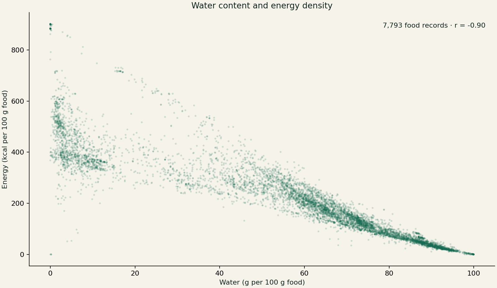
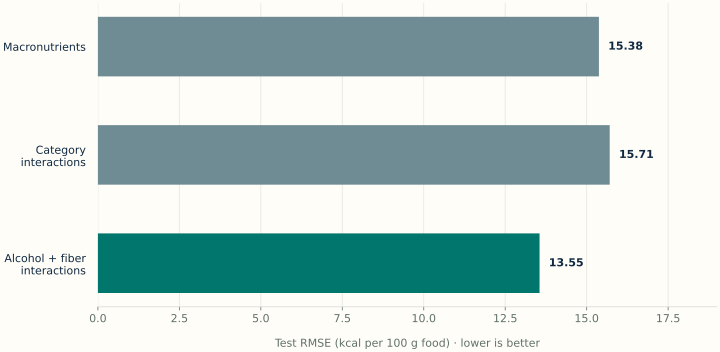

Vitamin C in raw acerola
mg per 100 g. Highest recorded value in the fruit category.
Python case study · Original work December 2023
Which fruit has the most vitamin C? I explored 7,793 foods using Python, from nutrient comparisons and data cleaning to water–energy relationships and calorie modeling. The original 2023 study includes a reproducible 2026 review.

mg per 100 g. Highest recorded value in the fruit category.
Higher water content is associated with lower energy density in this dataset.
kcal per 100 g for the extended model, with evaluation limits documented.
Raw acerola: 1,677.6 mg per 100 g. The ranking uses 349 fruit records with reported vitamin C, out of 355 in the Fruits and Fruit Juices category. Six missing values remain unknown. This is a dataset-specific comparison; fresh, juiced and dried forms are distinct.
Explore the fruit ranking and corrected code →

The analysis began with a DataCamp learning competition: explore nutrient composition, identify vitamin C sources, inspect water and calorie relationships, and fit linear models to food energy. I extended the baseline to include food categories, interactions, alcohol and fiber.
The source contains nine nutrient and energy fields alongside food identifiers, descriptions and categories. Values are reported per 100 g, so comparisons use a consistent mass rather than unequal portions.
Source: DataCamp’s “What Foods Are the Most Nutritious?” dataset, modified from USDA FoodData Central. My publication is dated 11 December 2023. This was an unjudged learning competition; participation does not imply an award.
I converted strings such as “5.88 g” and “307.0 kcal” into numeric values, explored missingness, summarized food categories and plotted nutrient relationships.
The review retains missing values until an analysis needs them. Alcohol is missing in 2,394 records; replacing those values with zero would make an unsupported assumption.
Observed association: water and calories have Pearson r = −0.895 in this dataset. Foods with greater water content generally have lower energy density per 100 g.

The first specification regressed calories on protein, fat and carbohydrate without an intercept. Recalculation reproduced the saved coefficients: 4.137 for protein, 8.844 for fat and 3.854 for carbohydrate, in kcal per gram.
The original notebook then added category effects and interactions, followed by alcohol and fiber. Its saved residual standard errors were 16.68, 13.89 and 8.14 kcal. These are training-fit statistics; they do not measure prediction performance on unseen foods.
The review uses the same 5,334 positive-calorie, complete-model-input rows for all three specifications. A deterministic split within each food category gives 4,278 training rows and 1,056 test rows. Missing cholesterol or vitamin C does not exclude a row because neither is a model input.

| Specification | Test MAE (kcal) | Test RMSE (kcal) | Rank / columns |
|---|---|---|---|
| Macronutrients | 6.86 | 15.38 | 3 / 3 |
| Category interactions | 6.04 | 15.71 | 100 / 100 |
| Alcohol and fiber interactions | 4.70 | 13.55 | 126 / 150 |
MAE = mean absolute error; RMSE = root mean squared error. Both use kcal per 100 g. Results are from the 2026 review, not the original submission.
The category-only extension slightly increases RMSE on this split. Adding alcohol and fiber lowers it to 13.55 kcal, but the full interaction matrix is rank deficient (126 of 150 columns). Its individual coefficients require caution.
The held-out comparison is an internal reproducibility check. Related products may appear across train and test sets, and complete-case selection can bias results. The work is an exploratory learning study, not a clinical or production prediction system.